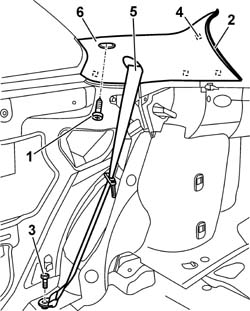

7040H42 REAR PILLAR TRIM - R R
- Path
- Procedures > 70 FITTINGS > 7040 BODYSHELL INTERIOR TRIMS AND FITTINGS > 7040H ROOF PANEL LINING > 7040H42 REAR PILLAR TRIM - R R
- Kind
- repair procedure (removal / refitting; the operation number is the code)
- Applies to
- all engines; all production periods
- Interactive page
- https://sloeber94.github.io/elrnDB-aGt/en/#/125001883
Applies to: all engines; all production periods
 Removing
Removing
 Refitting
RefittingOp. 7040L40 REAR COMPARTMENT SCUFF STRIP - R R
Op. 7050A22 REAR SEAT CUSHION - R+R
Op. 7050A14 SPLIT REAR SEAT ASSEMBLY - R+R
1. Undo the bolt.
2. Remove the tailgate seal near the pillar trim.
3. Undo the lower bolt fixing the rear seat belt.
4. Remove the pillar trim inner retainers using the special tool.
 | Name | Country |
|---|---|---|
4 | Scraper blade | 1.823.015.000 |
5. Pass all of the seat belt through the special opening in the pillar trim.
6. Keep the rear pillar trim.

Applies to: all engines; all production periods
Refitting
RemovingCheck that the pillar trim is not damaged.
Insert the seat belt in the opening in the trim.
Fit the pillar trim on the internal retainers.
Fit the tailgate seal near the pillar trim.
Tighten the bolt fixing the rear pillar trim.
Tighten the lower rear seat belt fixing bolt to torque.
 | Fastening | Component | Ø | Value (daNm) |
|---|---|---|---|---|
- | Bolt | REAR SEAT BELT | M7/16'' | 4 |
Op. 7050A14 SPLIT REAR SEAT ASSEMBLY - R+R
Op. 7050A22 REAR SEAT CUSHION - R+R
Topics linked from this page (5)
- 7040H50 REAR PANEL - R R
- 7040H80 PARCEL RACK
- 7040L40 REAR COMPARTMENT SCUFF STRIP - R R
- 7050A14 SPLIT REAR SEAT ASSEMBLY - R+R
- 7050A22 REAR SEAT CUSHION - R+R
Topics that link to this page (8)
- S60 REAR CREAKING
- 3340A35 LEFT REAR WHEEL RPM SENSOR - R R
- 3340A37 RIGHT REAR WHEEL RPM SENSOR - R R
- 3340A44 REAR WHEEL RPM SENSORS (TWO) R R
- 5505C28 INTERGRATED ENGINE BAY AND ABS SYSTEM WIRING - R R
- 5505C41 CABIN WIRING - R R
- 7040H10 ROOF PANEL LINING - R R
- 7065B28 REAR SEAT BELT HEIGHT ADJUSTER ONE LH OR RH R R